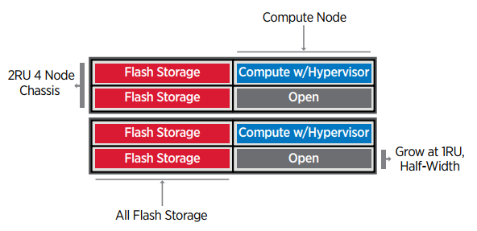

NVA-1148: NetApp HCI with Red Hat Virtualization
Contributors
 Download PDF of this page
Download PDF of this page
Alan Cowles, Nikhil M Kulkarni, NetApp
NetApp HCI with Red Hat Virtualization is a verified, best-practice architecture for the deployment of an on-premises virtual datacenter environment in a reliable and dependable manner.
This architecture reference document serves as both a design guide and a deployment validation of the Red Hat Virtualization solution on NetApp HCI. The architecture described in this document has been validated by subject matter experts at NetApp and Red Hat to provide a best-practice implementation for an enterprise virtual datacenter deployment using Red Hat Virtualization on NetApp HCI within your own enterprise datacenter environment.
Use Cases
The NetApp HCI for Red Hat OpenShift on Red Hat Virtualization solution is architected to deliver exceptional value for customers with the following use cases:
-
Infrastructure to scale on demand with NetApp HCI
-
Enterprise virtualized workloads in Red Hat Virtualization
Value Proposition and Differentiation of NetApp HCI with Red Hat Virtualization
NetApp HCI provides the following advantages with this virtual infrastructure solution:
-
A disaggregated architecture that allows for independent scaling of compute and storage.
-
The elimination of virtualization licensing costs and a performance tax on independent NetApp HCI storage nodes.
-
NetApp Element storage provides quality of service (QoS) per storage volume and allows for guaranteed storage performance for workloads on NetApp HCI, preventing adjacent workloads from negatively affecting performance.
-
The data fabric powered by NetApp allows data to be replicated from an on-premise to on- premise location or replicated to the cloud to move the data closer to where the application needs the data.
-
Support through NetApp Support or Red Hat Support.
NetApp HCI Design
NetApp HCI, is the industry’s first and leading disaggregated hybrid cloud infrastructure, providing the widely recognized benefits of hyperconverged solutions. Benefits include lower TCO and ease of acquisition, deployment, and management for virtualized workloads, while also allowing enterprise customers to independently scale compute and storage resources as needed. NetApp HCI with Red Hat Virtualization provides an open source, enterprise virtualization environment based on Red Hat Enterprise Linux.
By providing an agile turnkey infrastructure platform, NetApp HCI enables you to run enterprise-class virtualized and containerized workloads in an accelerated manner. At its core, NetApp HCI is designed to provide predictable performance, linear scalability of both compute and storage resources, and a simple deployment and management experience.
Predictable
One of the biggest challenges in a multitenant environment is delivering consistent, predictable performance for all your workloads. Running multiple enterprise-grade workloads can result in resource contention, where one workload interferes with the performance of another. NetApp HCI alleviates this concern with storage quality-of-service (QoS) limits that are available natively with NetApp Element software. Element enables the granular control of every application and volume, helps to eliminate noisy neighbors, and satisfies enterprise performance SLAs. NetApp HCI multitenancy capabilities can help eliminate many traditional performance-related problems.
Flexible
Previous generations of hyperconverged infrastructure typically required fixed resource ratios, limiting deployments to four-node and eight-node configurations. NetApp HCI is a disaggregated hyper-converged infrastructure that can scale compute and storage resources independently. Independent scaling prevents costly and inefficient overprovisioning, eliminates the 10% to 30% HCI tax from controller virtual machine (VM) overhead, and simplifies capacity and performance planning. NetApp HCI is available in mix-and-match, small, medium, and large storage and compute configurations.
The architectural design choices offered enable you to confidently scale on your terms, making HCI viable for core Tier-1 data center applications and platforms. NetApp HCI is architected in building blocks at either the chassis or the node level. Each chassis can hold four nodes in a mixed configuration of storage or compute nodes.
Simple
A driving imperative within the IT community is to simplify deployment and automate routine tasks, eliminating the risk of user error while freeing up resources to focus on more interesting, higher-value projects. NetApp HCI can help your IT department become more agile and responsive by both simplifying deployment and ongoing management.
Business Value
Enterprises that perform virtualization in an open-source data center with Red Hat products can realize the value of this solution by following the recommended design, deployment, and best practices described in this document. The detailed setup of RHV on NetApp HCI provides several benefits when deployed as part of an enterprise virtualization solution:
-
High availability at all layers of the stack
-
Thoroughly documented deployment procedures
-
Nondisruptive operations and upgrades to hypervisors and the manager VM
-
API-driven, programmable infrastructure to facilitate management
-
Multitenancy with performance guarantees
-
The ability to run virtualized workloads based on KVM with enterprise-grade features and support
-
The ability to scale infrastructure independently based on workload demands
NetApp HCI with Red Hat Virtualization acknowledges these challenges and helps address each concern by implementing a verified architecture for solution deployment.
Technology Overview
With NetApp HCI for Red Hat Virtualization, you can deploy a fully integrated, production-grade virtual data center that allows you to take advantage of the following features:
-
NetApp HCI compute and storage nodes
-
Enterprise-grade hyperconverged infrastructure designed for hybrid cloud workloads
-
NetApp Element storage software
-
Intel- based server compute nodes, including options for NVIDIA GPUs
-
-
Red Hat Virtualization
-
Enterprise hypervisor solution for deployment and management of virtual infrastructures
-
NetApp HCI
NetApp HCI is an enterprise-scale disaggregated hybrid cloud infrastructure (HCI) solution that delivers compute and storage resources in an agile, scalable, and easy-to-manage two-rack unit (2RU) four-node building block. It can also be configured with 1RU compute and server nodes. The minimum deployment consists of four NetApp HCI storage nodes and two NetApp HCI compute nodes. The compute nodes are installed as RHV-H hypervisors in an HA cluster. This minimum deployment can be easily scaled to fit customer enterprise workload demands by adding additional NetApp HCI storage or compute nodes to expand available resources.

The design for NetApp HCI for Red Hat Virtualization consists of the following components in a minimum starting configuration:
-
NetApp H-Series all-flash storage nodes running NetApp Element software
-
NetApp H-Series compute nodes running the Red Hat Virtualization RHV-H hypervisor
For more information about compute and storage nodes in NetApp HCI, see the NetApp HCI Datasheet.
NetApp Element Software
NetApp Element software provides modular, scalable performance, with each storage node delivering guaranteed capacity and throughput to the environment. You can also specify per-volume storage QoS policies to support dedicated performance levels for even the most demanding workloads.
iSCSI Login Redirection and Self-Healing Capabilities
NetApp Element software uses the iSCSI storage protocol, a standard way to encapsulate SCSI commands on a traditional TCP/IP network. When SCSI standards change or when Ethernet network performance improves, the iSCSI storage protocol benefits without the need for any changes.
Although all storage nodes have a management IP and a storage IP, NetApp Element software advertises a single storage virtual IP address (SVIP address) for all storage traffic in the cluster. As a part of the iSCSI login process, storage can respond that the target volume has been moved to a different address, and therefore it cannot proceed with the negotiation process. The host then reissues the login request to the new address in a process that requires no host-side reconfiguration. This process is known as iSCSI login redirection.
iSCSI login redirection is a key part of the NetApp Element software cluster. When a host login request is received, the node decides which member of the cluster should handle the traffic based on IOPS and the capacity requirements for the volume. Volumes are distributed across the NetApp Element software cluster and are redistributed if a single node is handling too much traffic for its volumes or if a new node is added. Multiple copies of a given volume are allocated across the array. In this manner, if a node failure is followed by volume redistribution, there is no effect on host connectivity beyond a logout and login with redirection to the new location. With iSCSI login redirection, a NetApp Element software cluster is a self-healing, scale-out architecture that is capable of non- disruptive upgrades and operations.
NetApp Element Software Cluster QoS
A NetApp Element software cluster allows QoS to be dynamically configured on a per-volume basis. You can use per-volume QoS settings to control storage performance based on SLAs that you define. The following three configurable parameters define the QoS:
-
Minimum IOPS. The minimum number of sustained IOPS that the NetApp Element software cluster provides to a volume. The minimum IOPS configured for a volume is the guaranteed level of performance for a volume. Per-volume performance does not drop below this level.
-
Maximum IOPS. The maximum number of sustained IOPS that the NetApp Element software cluster provides to a specific volume.
-
Burst IOPS. The maximum number of IOPS allowed in a short burst scenario. The burst duration setting is configurable, with a default of 1 minute. If a volume has been running below the maximum IOPS level, burst credits are accumulated. When performance levels become very high and are pushed, short bursts of IOPS beyond the maximum IOPS are allowed on the volume.
Multitenancy
Secure multitenancy is achieved with the following features:
-
Secure authentication. The Challenge-Handshake Authentication Protocol (CHAP) is used for secure volume access. The Lightweight Directory Access Protocol (LDAP) is used for secure access to the cluster for management and reporting.
-
Volume access groups (VAGs). Optionally, VAGs can be used in lieu of authentication, mapping any number of iSCSI initiator-specific iSCSI Qualified Names (IQNs) to one or more volumes. To access a volume in a VAG, the initiator’s IQN must be in the allowed IQN list for the group of volumes.
-
Tenant virtual LANs (VLANs). At the network level, end-to-end network security between iSCSI initiators and the NetApp Element software cluster is facilitated by using VLANs. For any VLAN that is created to isolate a workload or a tenant, Element software creates a separate iSCSI target SVIP address that is accessible only through the specific VLAN.
-
VPN routing/forwarding (VRF)-enabled VLANs. To further support security and scalability in the data center, Element software allows you to enable any tenant VLAN for VRF-like functionality. This feature adds these two key capabilities:
-
L3 routing to a tenant SVIP address. This feature allows you to situate iSCSI initiators on a separate network or VLAN from that of the NetApp Element software cluster.
-
Overlapping or duplicate IP subnets. This feature enables you to add a template to tenant environments, allowing each respective tenant VLAN to be assigned IP addresses from the same IP subnet. This capability can be useful for service provider environments where scale and preservation of IP- space are important.
-
Enterprise Storage Efficiencies
The NetApp Element software cluster increases overall storage efficiency and performance. The following features are performed inline, are always on, and require no manual configuration by the user:
-
Deduplication. The system only stores unique 4K blocks. Any duplicate 4K blocks are automatically associated with an already stored version of the data. Data is on block drives and is mirrored with Element Helix data protection. This system significantly reduces capacity consumption and write operations within the system.
-
Compression. Compression is performed inline before data is written to NVRAM. Data is compressed, stored in 4K blocks, and remains compressed in the system. This compression significantly reduces capacity consumption, write operations, and bandwidth consumption across the cluster.
-
Thin provisioning. This capability provides the right amount of storage at the time that you need it, eliminating capacity consumption that caused by overprovisioned volumes or underutilized volumes.
-
Helix. The metadata for an individual volume is stored on a metadata drive and is replicated to a secondary metadata drive for redundancy.
| Element was designed for automation. All the storage features mentioned above can be managed with APIs. These APIs are the only method that the UI uses to control the system and can be incorporated into user workflows to ease the management of the solution. |
Red Hat Virtualization
Red Hat Virtualization (RHV) is an enterprise virtual data center platform that runs on Red Hat Enterprise Linux using the KVM hypervisor.
For more information about Red Hat Virtualization, see the website located here.
RHV provides the following features:
-
Centralized management of VMs and hosts. The RHV manager runs as a physical or VM in the deployment and provides a web-based GUI for the management of the solution from a central interface.
-
Self-Hosted Engine. To minimize the hardware requirements, RHV allows RHV Manager to be deployed as a VM on the same hosts that run guest VMs.
-
High Availability. To avoid disruption from host failures, RHV allows VMs to be configured for high availability. The highly available VMs are controlled at the cluster level using resiliency policies.
-
High Scalability. A single RHV cluster can have up to 200 hypervisor hosts, enabling it to support the requirements of massive VMs to hold resource-greedy enterprise-class workloads.
-
Enhanced security. Inherited from RHEL, Secure Virtualization (sVirt) and Security Enhanced Linux (SELinux) technologies are employed by RHV for the purposes of elevated security and hardening for the hosts and VMs. The key advantage from these features is logical isolation of a VM and its associated resources.
Red Hat Virtualization Manager
Red Hat Virtualization Manager (RHV-M) provides centralized enterprise-grade management for the physical and logical resources within the RHV virtualized environment. A web-based GUI with different role- based portals is provided to access RHV-M features.
RHV-M exposes configuration and management of RHV resources with open-source, community-driven RESTful APIs. It also supports full-fledged integration with Red Hat CloudForms and Red Hat Ansible for automation and orchestration.
Red Hat Virtualization Hosts
Hosts (also called hypervisors) are the physical servers that provide hardware resources for the VMs to run on. A kernel-based virtual machine (KVM) provides full virtualization support, and Virtual Desktop Server Manager (VDSM) is the host agent that is responsible for host communication with the RHV-M.
The two types of hosts supported in Red Hat Virtualization are Red Hat Virtualization Hosts (RHV-H) and Red Hat Enterprise Linux hosts (RHEL).
RHV-H is a minimal, light-weight operating system based on Red Hat Enterprise Linux that is optimized for the ease of setting up physical servers as RHV hypervisors.
RHEL hosts are servers that run the standard Red Hat Enterprise Linux operating system. They can then be configured with the required subscriptions to install the packages required to permit the physical servers to be used as RHV hosts.
Red Hat Virtualization Architecture
Red Hat Virtualization can be deployed in two different architectures, with the RHV-M as a physical server in the infrastructure or with the RHV-M configured as a self-hosted engine. NetApp recommends using the self-hosted engine deployment, in which the RHV-M is a VM hosted in the same environment as other VMs, as we do in this guide.
A minimum of two self-hosted nodes are required for high availability of guest VMs and RHV-M. To provide high availability for the manager VM, HA services are enabled and run on all the self-hosted engine nodes.

 Edit on GitHub
Edit on GitHub